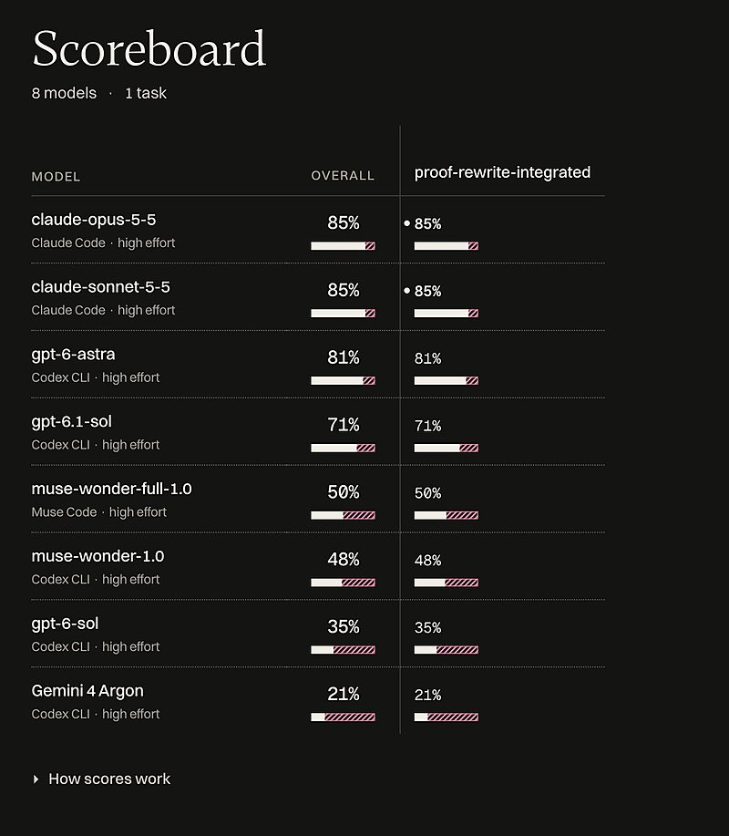
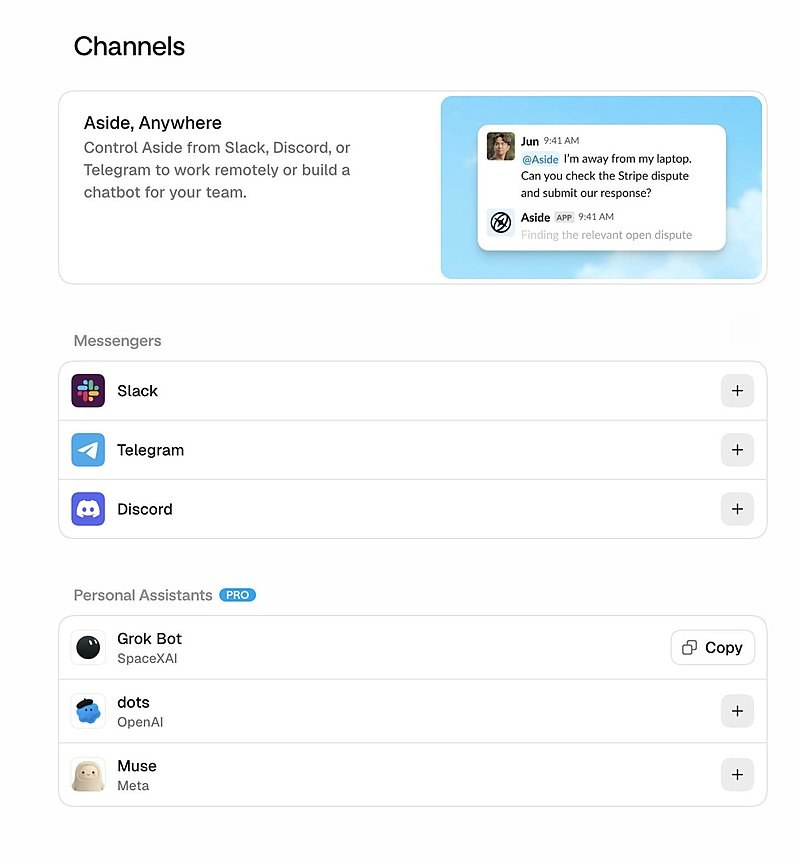

AI 日报 · 10月15日
让 AI 的工作结果经得起核验
OpenAI 披露用编码 Agent 清理旧代码与实验的内部流程，Meta 展示由医学研究者主导的 AI 辅助研究。Sequoia 访谈追问从经验中学习的路径；Builder 动态提醒我们把演示、单项评测和真实工作结果分开看。
可验证工作
编码 Agent
AI 科研
经验学习
7
Builder 动态
4
今日上榜项目
3
官方原始来源
1
公开视频
今日要点
OpenAI 核心实验团队称，工程师让 Codex 汇集历史变更、运行数据与配置证据，再提出可审查的清理 PR。文章报告两周内合并超过 1,400 个 PR、删除超过 80 万行代码；这是其内部实践，不应外推为一般团队的产能。
Meta 称医学研究者在四周内借助 Muse 模型和内部编程框架完成 10 份研究手稿，使用许可的去标识化病历数据。研究者负责科学判断；稿件经过同行、生物统计学家及第三方专家审阅，不能据此推断临床实践已改变。
深度对话
David Silver 谈从经验中学习的“超级学习者”
Sequoia Capital 的 Training Data 于 10 月 13 日发布 David Silver 与 Lasse Espeholt 访谈。两位 Ineffable Intelligence 创始人讨论不用人类预训练数据、在模拟环境中持续发现知识的研究路线；时间表与未来能力属于受访者预测。
目标是持续自主发现
Silver 将“超级学习者”定义为能从经验中不断学习、跨不同环境发现新知识的系统。他明确表示现有模型虽有科学成果，仍需要大量人工参与。
用可扩展的环境检验假设
访谈介绍研究团队构建强化学习系统和模拟环境的思路，讨论环境设计、计算规模以及模拟到现实的边界。
把预期与已证实结果分开
访谈中的研究目标与时间预测尚未得到公开实验验证；当前可核对的是团队提出的研究路线和技术取舍。
资讯精选
官方原始来源
Anthropic｜美国中期选举信息防护
Anthropic 披露对美国 Claude.ai 用户 25 万段对话样本的分析，并说明将引入 Democracy Works 的官方投票信息与选举夜结果。样本比例只代表其产品和抽样时段。
Builder 动态
七个关于使用、评测与落地的信号
Swyx｜用真实 SaaS 检验 AI 复刻
Swyx 介绍一场周末黑客松：参赛者尝试复刻其团队每年支付 4.3 万美元的 SaaS，采用 AI 与人工共同评估。他称收到 72 份提交；结果应以原节目公开的数据与评测条件为准。
Thibault Sottiaux｜桌面端减少磁盘占用
OpenAI 的 Thibault Sottiaux 称，ChatGPT 与 Codex 桌面端调整状态存储方式后，磁盘保存量预计减少约 60%。这是产品团队公布的优化幅度，个人设备上的实际变化可能不同。
Amjad Masad｜AI 能力扩散仍需服务商
Replit CEO Amjad Masad 认为，即使前沿研究暂停，现有 AI 能力向经济活动扩散仍需多年；他以此说明 Replit 与解决方案伙伴合作的方向。“十年”是他的判断，并非测量结果。
Aaron Levie｜网络安全有双向 Agent 效应
Box CEO Aaron Levie 指出，Agent 会扩大攻击者寻找软件漏洞的能力，也可能帮助防守方审查代码、测试利用路径和处理告警。他列举的是未来机会与风险，并非已验证的覆盖率提升。
Dan Shipper｜单项工程评测与发布热度不同
Every 的 Dan Shipper 分享其高级工程师基准的一项任务结果：Gemini 4 Argon 在该任务得 21%。这是其自有评测的一次比较，不能概括模型的整体编程能力。

Garry Tan｜让 Agent 使用真实浏览器
Y Combinator 的 Garry Tan 推荐让 Agent 进入真实浏览器和已有登录环境，以完成实际工作。配图为他原帖所附的 Aside 界面；授权范围与操作记录仍需使用者自行设定。

Josh Woodward｜用自然语言做交互乐器
Google 的 Josh Woodward 展示用一段 24 词提示词制作的定制合成器，演示将马蹄、水纹和手势转成音乐。原帖为单个演示视频，不能代表通用开发耗时。
GitHub Trending
今日榜单的四个项目


按 10 月 15 日 GitHub Trending 实时榜单筛选；星标、分叉和语言为本次 GitHub API 快照，会继续变化。避开昨日重点介绍的仓库。
今日思考
代码清理需要运行数据和审查记录，医学研究需要专家负责科学判断，模型演示与单项基准也需要说明条件。把任务目标、授权范围、执行日志和人工复核点连起来，才有条件判断 Agent 是否真正完成工作。今日一问：你目前让 AI 完成的任务中，哪一项最缺少可复核的证据？
参考来源
OpenAI Developers｜软件维护实践
Meta AI Research｜健康数据研究
Anthropic｜2026 美国中期选举防护
Sequoia Capital｜David Silver 与 Lasse Espeholt 访谈及逐字稿
Training Data｜原频道公开视频
Swyx｜SaaS 复刻实验
Thibault Sottiaux｜桌面端优化
Amjad Masad｜能力扩散
Aaron Levie｜网络安全 Agent
Dan Shipper｜工程评测
Garry Tan｜真实浏览器
Josh Woodward｜交互乐器
GitHub｜10 月 15 日 Trending
morluto/rea
mksglu/context-mode
K-Dense-AI/scientific-agent-skills
ifixai-ai/iFixAi